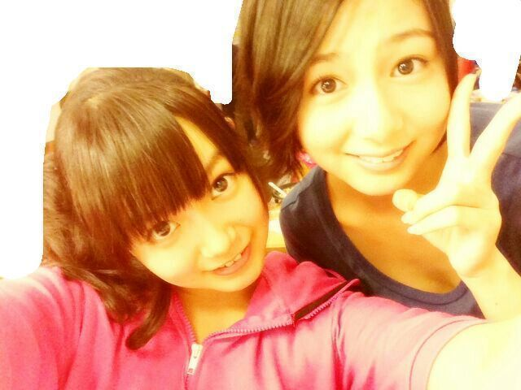
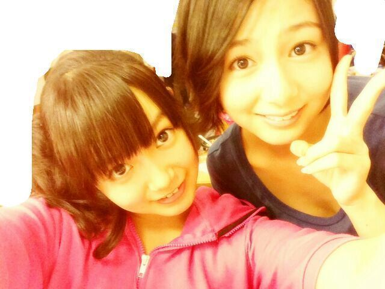

| 2013/08 31 Sat | ひめたん(*>ω<*)そ の335 |
全国ツアー最終日 東京！
来てくださったみなさん
本当にありがとうございました！
ameba中継 観てくれた方もありがとー(*^ω^*)
さあお待ちかねのヘアはこんな感じー♪
昼...くるくるポニテ
夜...ハーフアップくるくる
＼昼...くるくるポニテ／

＼夜...ハーフアップくるくる／

くるくるポニテってのは
毛先も巻いてるけど
結ぶ前に くるってやってるんだよー☆
最後は安定のひめたん結びで締める！
千秋楽って感じするでしょ( ω )？
さあ10パターンやったけど
あなたはどのヘアが好きかなー？
個人的にハーフツインがめちゃツボ←
で肝心のライブはねー
もうとにかーく熱気が凄まじい。熱かった！
真夏の全国ツアーとは
こーゆーことかって感じよねー
札幌と福岡は初ライブだったり♪
東名阪Zeppは１年ぶりてことで
私たち成長してたかなどうかなー(〃ω〃)
10公演すべて違うセットリストでーとか
万歩計つけて列島を完歩しよーとか
下駄っぷとかコントとかはじめてだらけで
もちろん全国ツアー自体初ですからー
メンバーやスタッフさんには
たくさん迷惑もかけたかも...
そしてみなさんもブログで
「リハ頑張れー」とか言ってくださるの
とっても励みになりましたがーちで！
そうやって周りの人たちに支えられて
成功した全国ツアーだったかなと思いまーす♪
努力、感謝、笑顔は
私たち乃木坂46の３原則なので
これからも大事に大事にしていきます( ^O^ )
東京公演では
全員でパフォーマンスできて
この46人で乃木坂46なんだなーって
改めて実感しました。
ずーさん(高山一実ちゃん)も言ってたけど
その中のひとりとして活動できていることが
誇らしい！
いつか46人で一列になって
ぐるカーのダンスとかしてみたいよね
もう圧巻だろうね！多！ってなるよね！
こっからバックヤードで
ゆみ姉も来てくれてね
お話したんだよー
楽曲中 ひめたんの声めっちゃ聴こえるー！
って言ってくれてね
ほんまにほんまに嬉しくて///
ひめきゅんさんにもひめたんの声
聴き分けられるかなー？んふふ
ちなみにこの日ね
朝ね楽屋でね指７本やけどしたのよ
まあーいろいろあってね(笑)
で、やばあーめちゃ赤くなったって
大騒ぎしてたんだけどね
ちゃーんと冷やしてお薬塗ったら
本番前には痛くなくなったのー！
やけどは正しく手当てしたら治ったの(｀・ω・´)
でもみんなは気を付けてねー
そして２つサプライズ発表されましたー
◎10/6 国立代々木競技場第一体育館
◎11/27 7thシングル発売
みなさーんスケジュール帳に
ちゃーんと書いといてーよー
詳しくは公式サイトに飛んでみてね＼( ^O^ )／
来てくださったみなさん
本当にありがとうございました！
ameba中継 観てくれた方もありがとー(*^ω^*)
さあお待ちかねのヘアはこんな感じー♪
昼...くるくるポニテ
夜...ハーフアップくるくる
＼昼...くるくるポニテ／
＼夜...ハーフアップくるくる／

くるくるポニテってのは
毛先も巻いてるけど
結ぶ前に くるってやってるんだよー☆
最後は安定のひめたん結びで締める！
千秋楽って感じするでしょ( ω )？
さあ10パターンやったけど
あなたはどのヘアが好きかなー？
個人的にハーフツインがめちゃツボ←
で肝心のライブはねー
もうとにかーく熱気が凄まじい。熱かった！
真夏の全国ツアーとは
こーゆーことかって感じよねー
札幌と福岡は初ライブだったり♪
東名阪Zeppは１年ぶりてことで
私たち成長してたかなどうかなー(〃ω〃)
10公演すべて違うセットリストでーとか
万歩計つけて列島を完歩しよーとか
下駄っぷとかコントとかはじめてだらけで
もちろん全国ツアー自体初ですからー
メンバーやスタッフさんには
たくさん迷惑もかけたかも...
そしてみなさんもブログで
「リハ頑張れー」とか言ってくださるの
とっても励みになりましたがーちで！
そうやって周りの人たちに支えられて
成功した全国ツアーだったかなと思いまーす♪
努力、感謝、笑顔は
私たち乃木坂46の３原則なので
これからも大事に大事にしていきます( ^O^ )
東京公演では
全員でパフォーマンスできて
この46人で乃木坂46なんだなーって
改めて実感しました。
ずーさん(高山一実ちゃん)も言ってたけど
その中のひとりとして活動できていることが
誇らしい！
いつか46人で一列になって
ぐるカーのダンスとかしてみたいよね
もう圧巻だろうね！多！ってなるよね！
こっからバックヤードで
ゆみ姉も来てくれてね
お話したんだよー
楽曲中 ひめたんの声めっちゃ聴こえるー！
って言ってくれてね
ほんまにほんまに嬉しくて///
ひめきゅんさんにもひめたんの声
聴き分けられるかなー？んふふ
ちなみにこの日ね
朝ね楽屋でね指７本やけどしたのよ
まあーいろいろあってね(笑)
で、やばあーめちゃ赤くなったって
大騒ぎしてたんだけどね
ちゃーんと冷やしてお薬塗ったら
本番前には痛くなくなったのー！
やけどは正しく手当てしたら治ったの(｀・ω・´)
でもみんなは気を付けてねー
そして２つサプライズ発表されましたー
◎10/6 国立代々木競技場第一体育館
◎11/27 7thシングル発売
みなさーんスケジュール帳に
ちゃーんと書いといてーよー
詳しくは公式サイトに飛んでみてね＼( ^O^ )／

 バドミントンやってる人ってどー思う？？
バドミントンやってる人ってどー思う？？
スマッシュッッッ
あ、あのかっこいーと思う( ^ω^ )
あのばしゅーんってやつ打たれたら
はああごめんなさいごめんなさいってなる！
今日はワンピースを見たけど、
ひめたんはみたことある？
うーんちらっとしかみたことないかな...
いつか原作一気読みしたいー
ひめたんってDDをどお思いますか？
乃木坂DDさんならしゃーないと思う。
ただし一推しはハッキリすることね(｀・ω・´)笑
ひめたーんは２番目でも３番目でも１番目でも
大歓迎だからねー

 万歩計は大丈夫だったかな？
万歩計は大丈夫だったかな？
10公演中6公演は
リセットされましたけども。
なんで？ひめたん万歩計さんに嫌われてる...？
ひめたんは楽天で買った事あるみたいだけど、
何買うの？？
それは今回の楽天スーパーセールでって
解釈でいーんかなー？
うーんなんとなーくしか決まってないから
ままと欲しいものまったりさがすよー( ^^ )
どうしたらそんなに可愛くなれる？
どうしたらそんなに歌が上手になれる？
あんまり褒めたら調子のるよー
もっともっと可愛くなりたいし
歌も上手になりたい！
 かなりんの好きなところ教えて
かなりんの好きなところ教えて
みんなにぺろぺろするところ！なんてね！
なんか物の考え方とか分析力とか
へーそんなとこまで気づくんだーって
いっつも思う( ω )
褒めたらがち照れしちゃって
はわわーってなるとこ可愛いよねー///
あと普段から意識高いとこ尊敬してます。
かなりんいつもありがとー大好きぺろぺろ！
BAT BOYS Jってドラマ見てなくても
映画わかりますか？
わかると思いますよー☆
でもあらかじめ登場人物ってゆーか
あーこんな組織があるのかーくらいは
頭に入れといたら困らないかもー
リボンの洗い方が悪いのかな〜？
だから、若干リボンが汚れてるのかな〜？w
...言い返せない。
ひめたんもまだまだだなー
ただ捨てないで使い続けてるところが
えらいでしょ？( ^ω^ )
明日は京都個握、
そして楽天スーパーセールの日よ＊
楽天スーパーセールは0:00スタートよ＼( ^O^ )／
京都個握いくよーって方はよろしくねー
宿題は心配しないでー♪

(＊´・ω・＊)
コメント(279)
2013/08/31 22:48